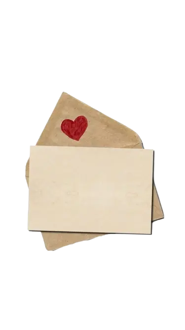
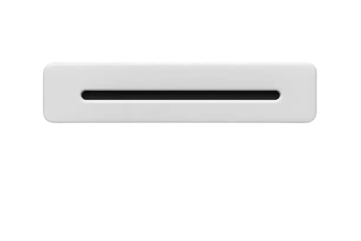
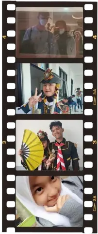
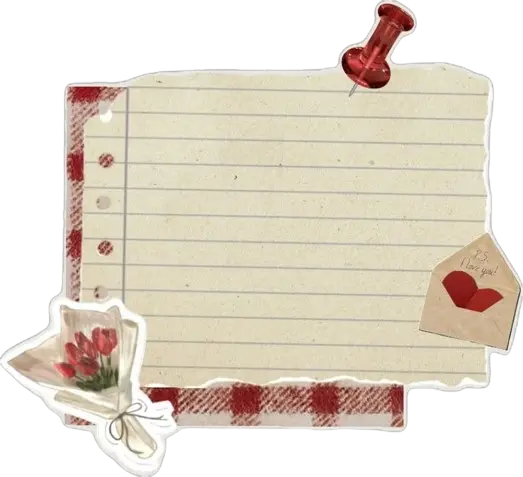
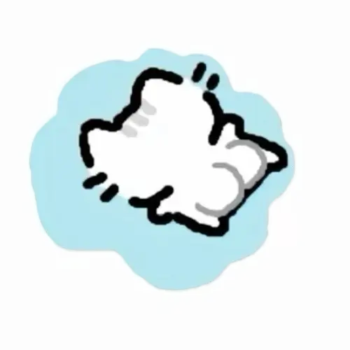

klik untuk membuka

Pieces of
our story



Pertanyaan Singkat
Kamu suka nggak sama hadiah kecil ini sayang?
Jujur ya, pilih salah satu di bawah ini:

Kayaknya kamu salah pencet deh...
Aku tahu dan percaya di dalam lubuk hatimu yang paling dalam, kamu sebenarnya mau pencet "Suka Banget", kan?
ini buat kamu sayang!


Happy Birthday, my favorite person!